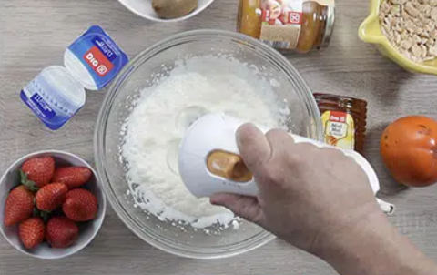
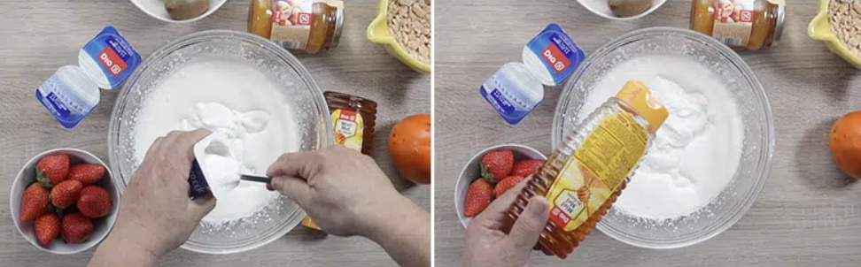
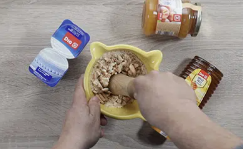
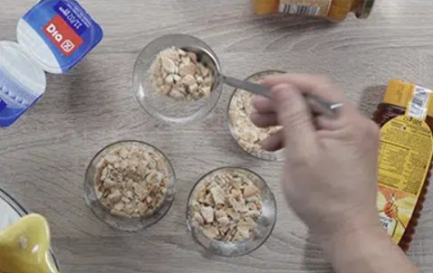
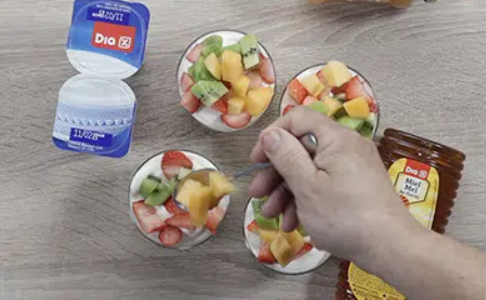
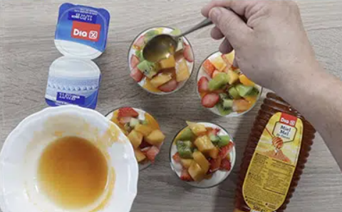
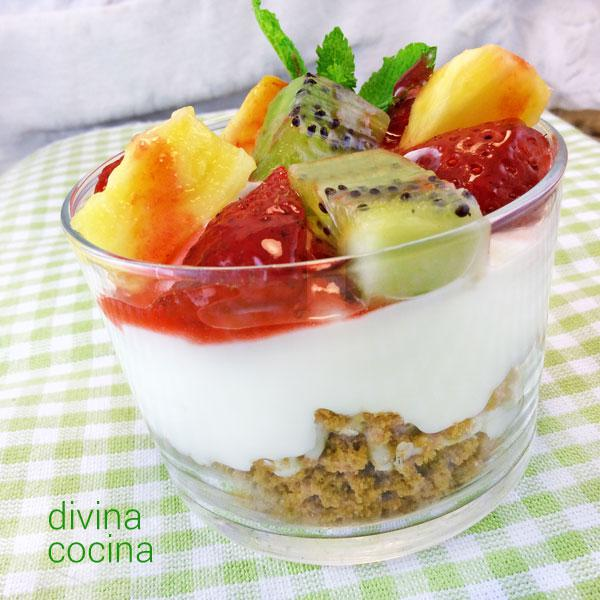

Estos son los ingredientes necesarios:
Paso 1: Ponemos en un bol la nata líquida y la batimos un poco para que aumente de volumen.
Paso 2: Mezclamos los yogures con la miel con un batidor y lo unimos todo con la nata.
Paso 3: Pelamos y picamos la fruta en trozos regulares. Machacamos las galletas en migas gruesas en un mortero.
Paso 4: Montamos los vasitos poniendo en el fondo una capa gruesa de migas de galleta. Rellenamos con crema y cubrimos con la fruta.
 Paso 5: Derretimos en el microondas unas cucharadas de mermelada de frutas con unas gotas de agua, y cubrimos la fruta con ella. Dejamos la crema de yogur con frutas enfriar en la nevera un par de horas antes de servir bien frío.
Este es el resultado final de la receta:
